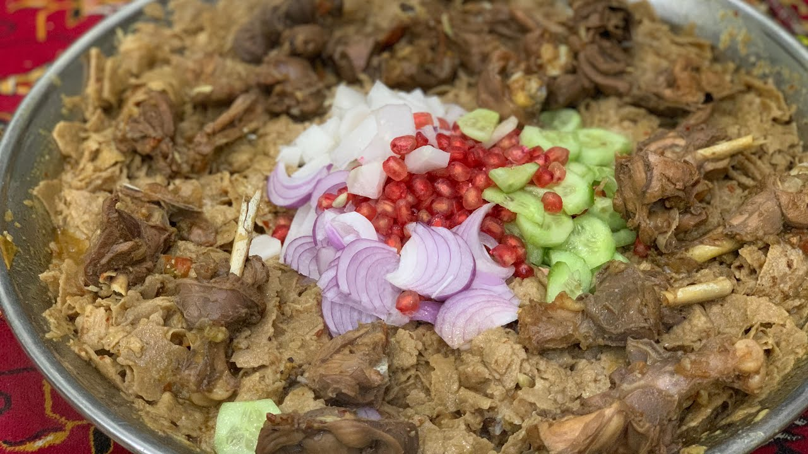

Chicken Sobat

Description
Desi Chicken Sobat is a traditional Pashtun and Saraiki dish made with tender desi chicken curry served over soaked roti or naan. The dish is rich in flavors, combining slow-cooked chicken with aromatic spices, yogurt, and a deliciously soft bread base.
This dish is commonly enjoyed in rural areas of Pakistan, particularly in Taunsa Sharif, Khyber Pakhtunkhwa and Balochistan, and is served at family gatherings.
Ingredients
- 1 whole desi chicken (cut into pieces)
- 2 large onions (chopped)
- 3 tomatoes (chopped)
- 1 cup yogurt
- 2 tablespoons ginger-garlic paste
- 1/2 cup cooking oil or ghee
- 1 teaspoon turmeric powder
- 1 teaspoon red chili powder
- 1 teaspoon cumin powder
- 1 teaspoon coriander powder
- 1 teaspoon garam masala
- Salt to taste
- 2 cups water
- Fresh coriander and green chilies for garnish
- 20 thin chapatis (for soaking)
Steps
- Heat oil or ghee in a large pot and add chopped onions. Fry until golden brown.
- Add ginger-garlic paste and sauté for a minute.
- Add chopped tomatoes, turmeric, red chili powder, cumin, coriander, and salt. Cook until the tomatoes soften and release oil.
- Add the desi chicken pieces and cook on medium heat until they are slightly browned.
- Add yogurt and mix well. Cook on low heat until the chicken becomes tender.
- Pour in 4 glass of water and let it simmer until a rich, flavorful curry forms.
- Sprinkle garam masala, fresh coriander, and green chilies.
- In a separate dish, tear naan or chapatis into pieces and place them in a large serving dish.
- Pour the hot chicken curry over the naan pieces, allowing them to soak up the flavors.
- Let it sit for a few minutes, then serve warm with fresh salad and raita.